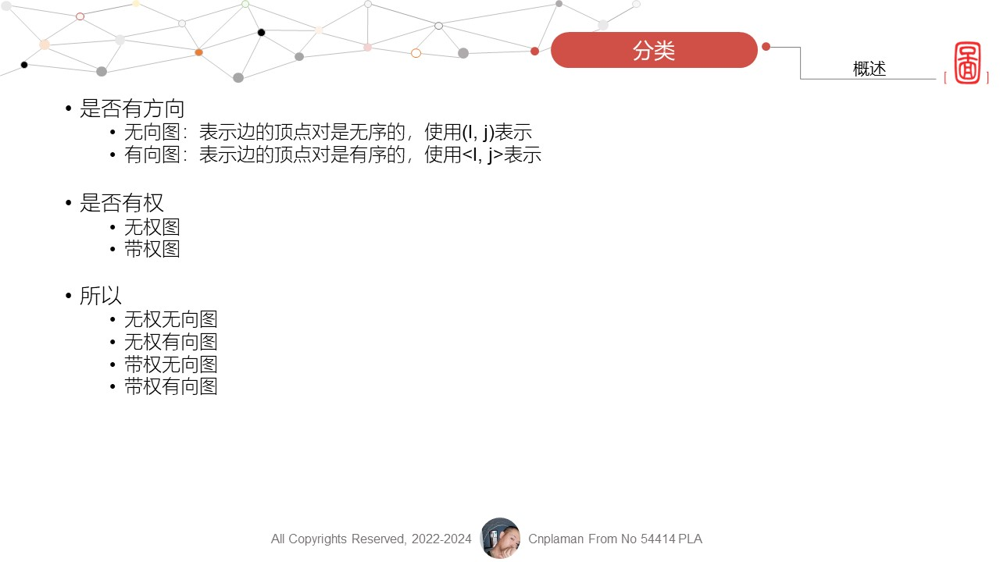
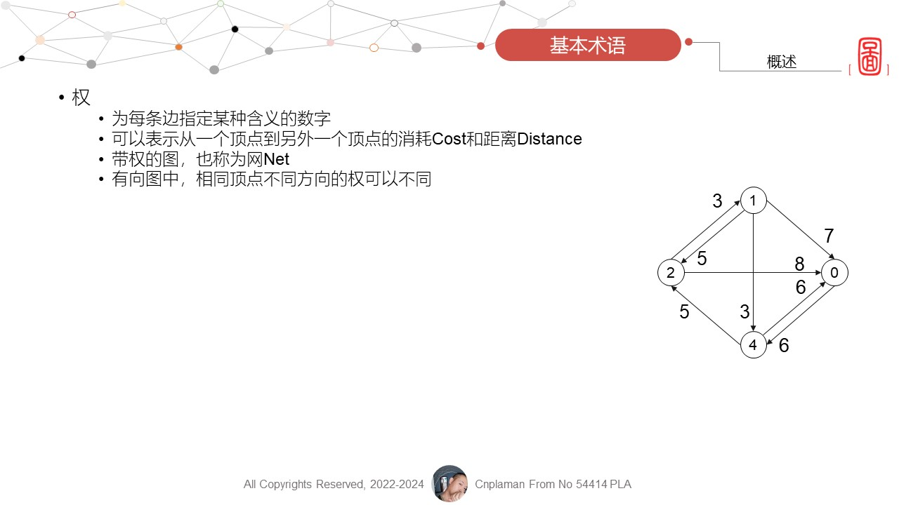

- 


- 
- [Section End]


图的存储 Storage
图的算法 Algorithm
- 邻接矩阵
-
MatGraph *CreateMat(MatGraph *G, int A[MAXV][MAXV], int n, int e) { int i, j; G->n = n; G->e = e; for (i = 0; i < G->n; i++) for (j = 0; j < G->n; j++) G->edges[i][j] = A[i][j]; return G; } void DispMat(MatGraph g) { int i, j; for (i = 0; i < g.n; i++) { for (j = 0; j < g.n; j++) if (g.edges[i][j] != INF) printf("%4d", g.edges[i][j]); else printf("%4s", "∞"); printf("\n"); } } - 邻接表
-
AdjGraph *CreateAdj(AdjGraph *G, int A[MAXV][MAXV], int n, int e) { int i, j; ArcNode *p; G = (AdjGraph *)malloc(sizeof(AdjGraph)); printf("%p\n", G); for (i = 0; i < n; i++) G->adjlist[i].firstarc = NULL; for (i = 0; i < n; i++) for (j = n - 1; j >= 0; j--) if (A[i][j] != 0 && A[i][j] != INF) { p = (ArcNode *)malloc(sizeof(ArcNode)); p->adjvex = j; p->weight = A[i][j]; p->nextarc = G->adjlist[i].firstarc; G->adjlist[i].firstarc = p; } G->n = n; G->e = n; return G; } void DispAdj(AdjGraph *G) { int i; ArcNode *p; for (i = 0; i < G->n; i++) { p = G->adjlist[i].firstarc; printf("%3d: ", i); while (p != NULL) { printf("%3d[%d]->", p->adjvex, p->weight); p = p->nextarc; } printf("^\n"); } } - [Section End]
图的遍历 Traverse
图的应用 Application